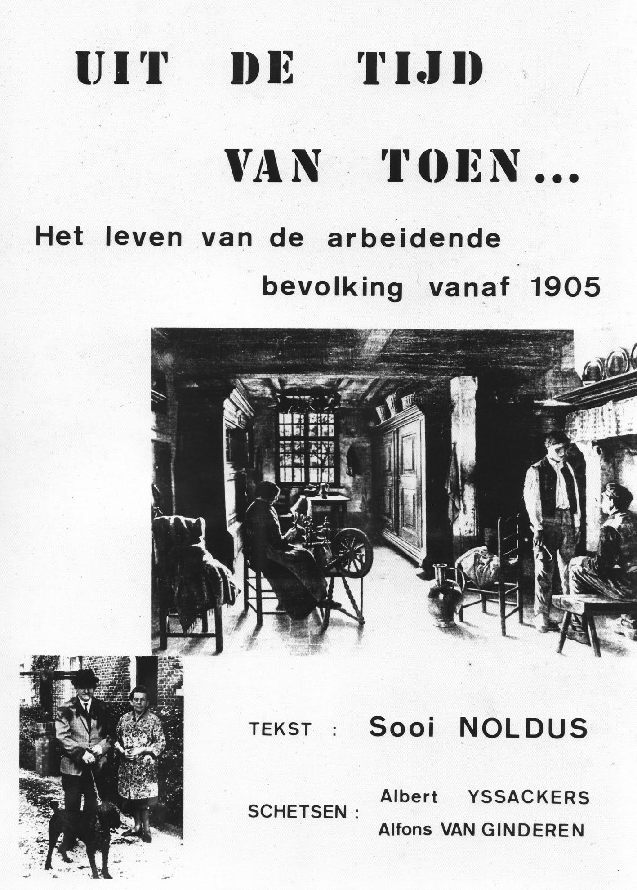

Op Pensioen
 Sooi is ook een voorloper in het gebruik van het openbaar vervoer. Wanneer hij niet goed meer te been is pakt hij de Lijn-bus om naar het gemeentehuis te gaan.
Hij wou nooit iemand tot last zijn.
Vanaf 1975 kwam Roger in nauwer in contact met Sooi en kreeg allerlei verhalen te horen over de socialistische beweging van vroeger. Roger schreef toen voor de Jongsocialisten artikels in De Voorbode en Sooi wou nog zijn mening kwijt in het blad waar hij jarenlang het hoofdartikel bezorgde. Onder de naam van een Oud Militant schreef Sooi nog tal van artikels. Hij typte ze zelf en Roger zette ze op stencil. Omdat de geschiedenis van de Essense socialistische partij nog nooit te boek was gesteld deed Roger aan Sooi het voorstel om al zijn herinneringen eens op papier te zetten. Intussen had Ivan Janssens ook al met Sooi gesprekken gevoerd en deze op cassette opgenomen. Sooi was wat ongeduldig en zo beëindigde hijzelf in maart 1978 zijn boek “Uit de tijd van toen…” Het leven van de arbeidende bevolking vanaf 1905. Het werd geïllustreerd door Albert Yssackers en Alfons Van Ginderen. Het werd door Sooi en Roger uitgegeven op electrostencil en gedrukt door Willy Merks. Het boek werd verkocht tegen kostprijs voor 186 fr. Sooi had het schrijven te pakken en begon zo aan een verhalen- en gedichtenbundel: “Acht verhalen uit het verleden”. Het ging om verhalen die echt gebeurd waren. Het boek werd gekopieerd door René Mutsaerts en Marcel Meeusen zorgde ervoor dat het ingebonden werd. Omdat zijn eerste boek uitverkocht was liet het René Mutsaerts het opnieuw kopiëren. Tijdens de gewestelijke Concentratie Polder en Hei te Essen georganiseerd door Roger Goosen hangt een overvolle zaal Volkshuis aan Sooi Noldus lippen wanneer hij zijn visie vertelt over het socialisme en zijn ervaringen ermee. Wanneer zijn echtgenote Joske Kersters overleed kraakte er een tak aan de boom Sooi Noldus. Hij voelde
zich eenzaam en vraagt Roger bij hem op het bovenste verdiep komt wonen. Roger gaat er niet op in en
vertelt hem dat het maar tot een hoop last zou leiden. Moegestreden en een fatale hartaanval leiden tot zijn
overlijden op 25 augustus 1980. Sooi krijgt een mooie begrafenisplechtigheid met een optocht van het
Volkshuis naar de begraafplaats in de Nieuwstraat waar zijn as verstrooid wordt.
Sooi blijft een begrip in de partij en in 1993 besluit Roger Ivo Huysmans te vragen om een boek over het leven van Sooi Noldus te schrijven. Na veel gesprekken en documentatie te hebben doorgenomen krijgen we in 1994 de uitgave van “Ik ben blij dat ik socialist ben”. Een referentiewerk voor iedere Essense sp.a-er. In 2007 wordt een beeld van Annie Andriessen in de gevel van Sooi’s huis op het Sint Antoniusplein geplaatst. In 2016 stelt Helmut Jaspers voor de Sooi Noldus Solidariteitsprijs van de sp.a jaarlijks uit te reiken. Bij de bouw van de nieuwe appartementen en woningen in de Statiewijk doet de SP het voorstel om het nieuwe plein de naam Frans Noldusplein te geven wat algemeen aanvaard wordt.
Wanneer de woningen klaar zijn en bewoond wordt onder impuls van SP voorzitter Patrick de la Bruyère op 1 mei 1996 een boom geplant door zoon Sylvain ter ere van Sooi.
Bij de bouw van de nieuwe appartementen en woningen in de Statiewijk doet de SP het voorstel om het nieuwe plein de naam Frans Noldusplein te geven wat algemeen aanvaard wordt.
Wanneer de woningen klaar zijn en bewoond wordt onder impuls van SP voorzitter Patrick de la Bruyère op 1 mei 1996 een boom geplant door zoon Sylvain ter ere van Sooi.